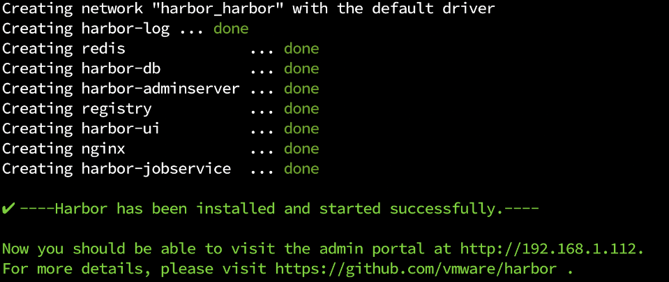
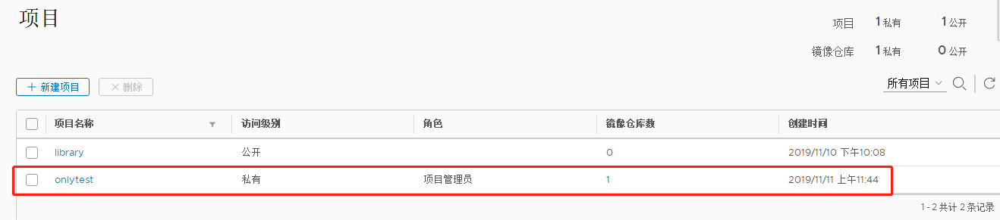
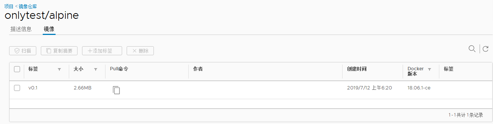

背景
- 公司或个人项目代码不能公开，如何共享镜像或快速发布？
- 在国内直接拉取官方镜像非常缓慢。如何才能快速取官方基础镜像呢？
- 国内的网络环境下，项目在
CI/CD过程中拉取镜像可能会花费比较多的时间，如何能加快拉取镜像的速度？
没错，搭建私有镜像仓库吧。
方案选择
搭建私有镜像仓库有几种方式：
1、官方 registry 方案，推荐使用 registry:2 v2 版本的镜像
2、harbor 方案， 则是在官方的基础上增加了权限控制、界面化等功能
本次我们采用harbor方案进行搭建，操作系统为Centos7.6 64位。
系统环境及配置要求
| 资源 | 配置 | 说明 |
|---|---|---|
| CPU | 2核 起步 | 4核 更佳 |
| Mem | 4GB 起步 | 8GB 更佳 |
| Disk | 40GB 起步 | 160GB 更佳 |
注：硬盘主要用于存储镜像，镜像量大可以考虑加大。
软件要求
| 软件 | 版本 | 说明 |
|---|---|---|
| Python | 2.7 以上 | Linux 服务器基本都安装了 2.7 版本，可以输入命令 python 确认是否已安装 |
| Docker | 1.10 以上 | 下面会介绍如何安装 |
| Docker Compose | 1.6.0 以上 | 下面会介绍如何安装 |
| Openssl | 推荐用最高版本 | 生成证书，自备证书的忽略 |
注：这里使用的是HTTP方式搭建，所以openssl暂时没有用到。
安装Docker及Docker Compose（如已安装，请跳过此步）
1、安装之前，先清除之前安装的旧版本 docker，如果有的话
sudo yum remove docker \ |
2、使用 repository 安装 docker ce
sudo yum install -y yum-utils device-mapper-persistent-data lvm2 ## 安装基础依赖包 |
注：如果想安装指定版本的docker-ce，可以先用命令查看版本号，然后再安装指定版本。
$ sudo yum install docker-ce-<VERSION STRING> ##安装指定版本，
## 例如：yum install docker-ce-18.06.3.ce
3、安装docker-compose
docker-compose存放在github上，但由于国内访问github不太稳定，所以可从daocloud上进行下载。
curl -L https://get.daocloud.io/docker/compose/releases/download/1.24.1/docker-compose-`uname -s`-`uname -m` > /usr/local/bin/docker-compose |
注：你可以通过修改上述URL中的版本（如：1.24.1），可以自定义您需要的版本。
4、启动docker（这一步很重要）
sudo systemctl start docker |
开始搭建镜像仓库
搭建步骤：
- 下载
habor安装器 - 修改配置文件
harbor.cfg - 运行
install.sh执行安装，此 shell 脚本内部会调用./prepare生成相关配置文件，再调用docker-compose来进行镜像拉取及启动。
harbor 有两种方式进行安装，分为离线和在线。如果网络环境不佳，可以选择离线安装。
这里选择在线方式（拉取远程镜像）安装：
下载安装器
$ wget https://storage.googleapis.com/harbor-releases/release-1.6/harbor-online-installer-v1.tgz |
解压安装程序：
$ tar -zxvf harbor-offline-installer-v1.6.3.tgz |
修改harbor.cfg文件
cd harbor |
修改以下部分：
hostname = 本机IP地址 ##修改为自己的本机IP地址，如果是想通过外网访问的话，这里的IP地址要写成本机公网IP地址。 |
注意：如果当前使用的服务器是从阿里云或其它云上购买的云主机，应注意在实例安全组中开放80端口。
为了方便后续管理，这里将harbor运行过程中产生的数据统一放在一个目录（/data/harbor）下面。
创建/data/harbor目录：
mkdir -p /data/harbor |
打开harbor.cfg文件并修改：
secretkey_path = /data/harbor ##因为下面会修改docker-compose.yml文件中的secretkey，这里是为了保持这两个文件中的secretkey路径一致 |
修改docker-compose.yml文件
将文件中的相关路径更改为/data/harbor，可直接使用如下配置：
version: '2' |
部署harbor
cd到harbor目录下执行，
./install.sh ##安装Harbor |
接下来会经历4个Step，最终会输出类似如下信息，则表示安装成功，此时可以在浏览器中输入网址访问了。

访问Harbor
在浏览器中输入网址，输入账号和密码，登录Harbor。
账号是admin，密码是刚才在harbor.cfg文件中设置的 harbor_admin_password 值。
进行推送和拉取镜像测试
1、在Harbor上新建一个项目，比如：onlytest

2、因为 docker 默认不允许用非 HTTPS 方式推送镜像，所以如果你的镜像仓库是以HTTP方式访问，则需要修改下daemon.json文件并重启docker。
打开/etc/docker/daemon.json（如果该文件不存在，就新建一个），修改以下内容：
{ |
输入 systemctl restart docker 重启docker。
3、登录私有docker镜像仓库
docker login 仓库IP:端口 |
输入Username 和 Password，完成登录操作。
3、修改待推送的镜像名称
$ docker tag 镜像ID 镜像名称:TAG名称 |
4、将镜像推送到私有镜像仓库
$ docker push 镜像名称:镜像TAG |
然后你会在刚才在Harbor上新建的项目中看到推送的镜像。

5、将刚才推送上去的镜像拉取到本地
先删除刚才第4步中推送到仓库里的本地镜像，方便下面验证pull操作。
$ docker rmi 镜像仓库IP:端口/你在Harbor上建的项目/镜像名称:TAG名称 |
拉取远程私有仓库镜像到本地
$ docker pull 镜像仓库IP:端口/你在Harbor上建的项目/镜像名称:TAG名称 |
在本地用docker images查看拉取的镜像，会发现镜像已经拉取下来了。
注：如果需要登出私有镜像仓库，可使用 docker logout登出。
$ docker logout 镜像仓库IP:端口 |
常见问题
修改了harbor.cfg中的hostname后，运行 ./install.sh 时报如下错误：
Please set hostname and other necessary attributes in harbor.cfg first. DO NOT use localhost or 127.0.0.1 for hostname, because Harbor needs to be accessed by external clients. |
原因：是由于在修改hostname值的时候，将原先的hostname那行注释掉了，然后新增了一行hostname，如：
hostname = reg.mydomain.com |
解决方法：在原始的脚本基础上直接修改hostname值，不要再新增一行hostname。
每次修改harbor.cfg文件都需要重启harbor才会生效，操作方法如下：
docker-compose down ##停止和移除所有harbor相关的容器 |
然后可以运行命令 docker ps看下容器状态。
在重启harbor过程中，输入docker-compose up -d时报错：
Creating network "harbor_harbor" with the default driver |
此时需要重启docker，输入命令 systemctl restart docker，再输入docker-compose up -d，成功启动harbor。
在搭建过程中（比如在输入docker-compose up命令时）遇到如下错误：
ERROR: Couldn't connect to Docker daemon at http+docker://localunixsocket - is it running? |
导致这个问题的原因实在多，所以把可能的解决方法都列出来，我想总有一款适合您。
- docker服务没启动，那就启动
$ sudo systemctl start docker // 或者 sudo service docker start |
- docker服务启动了，但是一些缓存影响了
那就重启
$ sudo systemctl restart docker // 或者 sudo service docker restart |
- 当前用户不在docker用户组
那就把自己加到docker用户组
sudo gpasswd -a ${USER} docker |
添加到docker用户组后要重新登录shell再up
- 也许用sudo可能有效
sudo docker-compose up |
- docker-compose版本太老了
那就更新版本
$ curl -L https://get.daocloud.io/docker/compose/releases/download/1.24.1/docker-compose-`uname -s`-`uname -m` > /usr/local/bin/docker-compose |
点击查看docker-compose官方安装教程（可能需要梯子）或 登录daocloud查看安装教程（推荐）